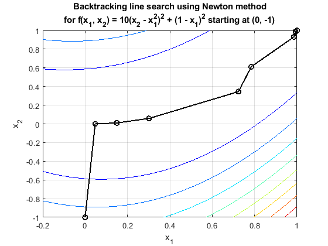
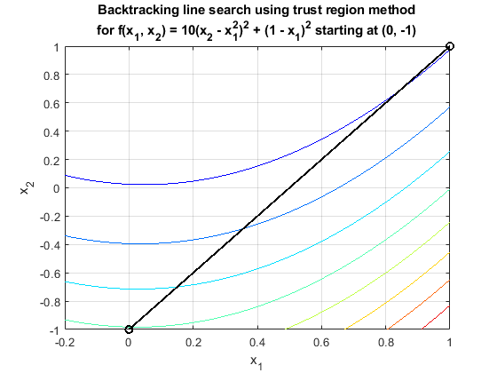
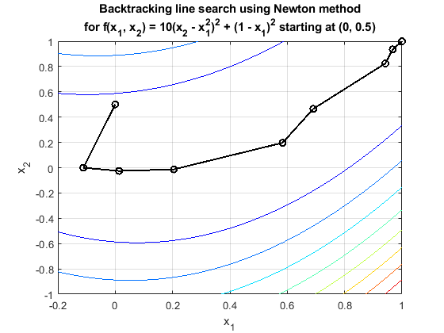
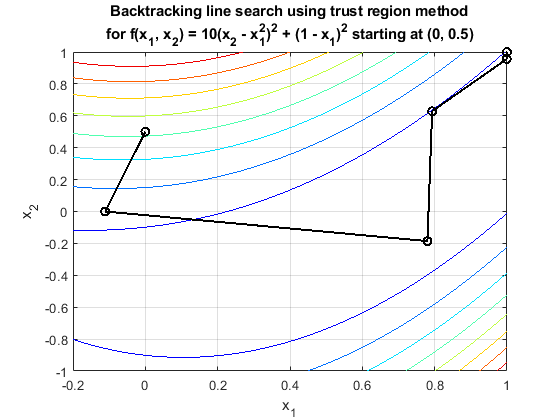

Contents
Homework Introduction
Establishing Parameters
clear
clc
alpha = 1.0;
c1 = 1e-4;
tolerance = 1e-8;
param = [alpha, c1, tolerance];
p1 = [ 0 ; -1];
p2 = [ 0 ; .5];
Setting Up Functions
x = sym('x', [2,1]);
p = sym('p', [2,1]);
f(x) = 10*(x(2) - x(1).^2).^2 + (1 - x(1)).^2;
f_grad(x) = gradient(f);
f_hess(x) = hessian(f);
m1(x) = f + p1'*f_grad + 0.5 * p1' * f_hess * p1;
m2(x) = f + p2'*f_grad + 0.5 * p2' * f_hess * p2;
NE = "Newton";
SD = "steepest descent";
TR = "trust region";
Iterating Methods and Printing Results:
figure(1)
clf
hold on
SD_point1 = line_search3(NE, f, p1, param);
plot_trust(SD_point1, NE, f);
figure(2)
clf
hold on
TR_point1 = line_search3(TR, f, p1, param);
plot_trust(TR_point1, TR, m1);
figure(3)
clf
hold on
SD_point2 = line_search3(NE, f, p2, param);
plot_trust(SD_point2, NE, f);
figure(4)
clf
hold on
TR_point2 = line_search3(TR, f, p2, param);
plot_trust(TR_point2, TR, m2);
   